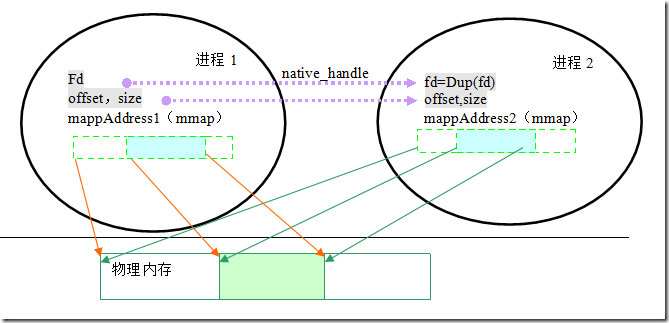

ashmem handle
Android Shared Memory
参考文档
native_handle_t
共享内存的fd被包装在handle中，其可以通过binder进行传递
Parcel中有专门处理handle的readNativeHandle函数
* frameworks/native/libs/ui/GraphicBuffer.cpp
* status_t GraphicBuffer::initWithSize(uint32_t inWidth, uint32_t inHeight, PixelFormat inFormat, uint32_t inLayerCount, uint64_t inUsage, std::string requestorName)
* GraphicBufferAllocator& allocator = GraphicBufferAllocator::get();
* status_t err = allocator.allocate(inWidth, inHeight, inFormat, inLayerCount, inUsage, &handle, &outStride, mId, std::move(requestorName));
* &handle;
* frameworks/native/libs/nativebase/include/nativebase/nativebase.h
* const native_handle_t* handle;
* frameworks/native/libs/binder/Parcel.cpp
* native_handle* Parcel::readNativeHandle() const
* h->data[i] = fcntl(readFileDescriptor(), F_DUPFD_CLOEXEC, 0);
* allocator.allocate((...)
* frameworks/native/libs/ui/GraphicBufferAllocator.cpp
* status_t GraphicBufferAllocator::allocate(...)
* return allocateHelper(width, height, format, layerCount, usage, handle, stride, requestorName, true);
* status_t error = mAllocator->allocate(requestorName, width, height, format, layerCount, usage, 1, stride, handle, importBuffer);
* frameworks/native/libs/ui/Gralloc2.cpp
* status_t Gralloc2Allocator::allocate(...)
* auto ret = mAllocator->allocate(...)
* outBufferHandles[i] = native_handle_clone(tmpBuffers[i].getNativeHandle());
